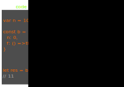

В обычных функциях/методах имеется свой this как ссылка на объект из которого вызвана функция/метод
var a = function a() {
return this;
};
a() === window // true
var a = function a() {
return this;
};
var foo = {
bar: a
};
foo.bar() === foo // true
var baz = {};
baz.bar = foo.bar;
baz.bar() === baz // true
В стрелочных функциях this берется из лексического окружения.

var a = (() => this);
a() === window // true
var a = (() => this);
var foo = {
bar: a
};
foo.bar() === foo; // false
foo.bar() === window; // true
var baz = {};
baz.bar = foo.bar;
baz.bar() === baz; // false
baz.bar() === window; // true